Social Networks Analysis and Visualization
ลักษณะข้อมูล
ข้อมูลที่ใช้สำหรับสร้าง network graph มี 2 ลักษณะ ลักษณะแรกเรียกว่า adjacency matrix และลักษณะที่สองเรียกว่า edgelist
Adjacency matrix
adjacency matrix คือเมทริกซ์ที่ด้านแถวและคอลัมน์คือจุดยอด และในแต่ละ cell ของเมทริกซ์จะใส่ตัวเลขที่เป็นไปได้ 2 ค่า ได้แก่ 0 กับ 1 โดยที่ถ้ามีค่าเป็น 1 หมายถึง จุดยอดของ cell นั้นมีความเชื่อมโยงกัน ตัวอย่างด้านล่างแสดง adjacency matrix ของ network graph ในข้างต้น
## บุญหนัก บุญทับ บุญมา บุญรอด บุญมี บุญยิ่ง
## บุญหนัก 0 0 1 1 0 0
## บุญทับ 1 0 0 0 0 0
## บุญมา 0 0 0 0 0 0
## บุญรอด 1 0 0 0 0 0
## บุญมี 0 0 0 0 1 0
## บุญยิ่ง 0 0 0 1 0 1Edgelist
Edgelist คือเมทริกซ์ข้อมูล (หรือ data.frame ก็ได้) ที่มี 2 คอลัมน์ แต่ละแถวของเมทริกซ์ดังกล่าวใช้แสดงคู่ของจุดยอดที่เชื่อมโยงกัน ดังตัวอย่างด้านล่าง
## col1 col2
## 1 A B
## 2 A C
## 3 A D
## 4 A E
## 5 A F
## 6 E F
## 7 F Gigraph package
มีหลาย package ใน R ที่สามารถใช้สร้าง network graph ได้ เช่น
igraph
statnet
ggnet
ggnetwork
ggraph
visNetwork
networkD3
sigma
rgexf
treejs
package หนึ่งที่มีประสิทธิภาพและจะกล่าวถึงในหัวข้อนี้คือ package-igraph การทำงานด้วย igraph มี 2 ขั้นตอน ขั้นแรกคือการสร้าง igraph object จากชุดข้อมูลดิบทั้งที่อยู่ในรูป adjacency matrix และ edgelist และขั้นที่สองคือการสร้าง network graph
จาก edgelist ข้างต้นสามารถนำมาสร้าง igraph object ได้ดังนี้
library(igraph)
g<-graph.edgelist(as.matrix(edgelist), directed=FALSE)
g## IGRAPH 31360d0 UN-- 7 7 --
## + attr: name (v/c)
## + edges from 31360d0 (vertex names):
## [1] A--B A--C A--D A--E A--F E--F F--Gเมื่อเรียก printout ของ igraph object ขึ้นมาดูจะให้สารสนเทศพื้นฐานเกี่ยวกับข้อมูลที่จะนำไปใช้สร้าง network graph ได้แก่ จำนวนจุดยอด, จำนวนเส้นเชื่อม, ตัวแปร attribute (ถ้ามี), …
นอกจากการเรีย printout ตรง ๆ แล้ว igraph ยังมีฟังก์ชันพื้นฐานที่ใช้เรียกดูสารสนเทศด้านต่าง ๆ ของข้อมูล network ได้ด้วย ได้แก่
V()ใช้สำหรับเรียกดูจุดยอดของ networkE()ใช้สำหรับเรียกดูเส้นเชื่อมของ networkgorder()ใช้เรียกดูจำนวนจุดยอดของ networkgsize()ใช้เรียกดูจำนวนเส้นเชื่อมของ network
การสร้าง network graph จาก igraph object สามารถทำได้ง่าย ๆ โดยใช้ฟังก์ชัน plot() ดังนี้
plot(g)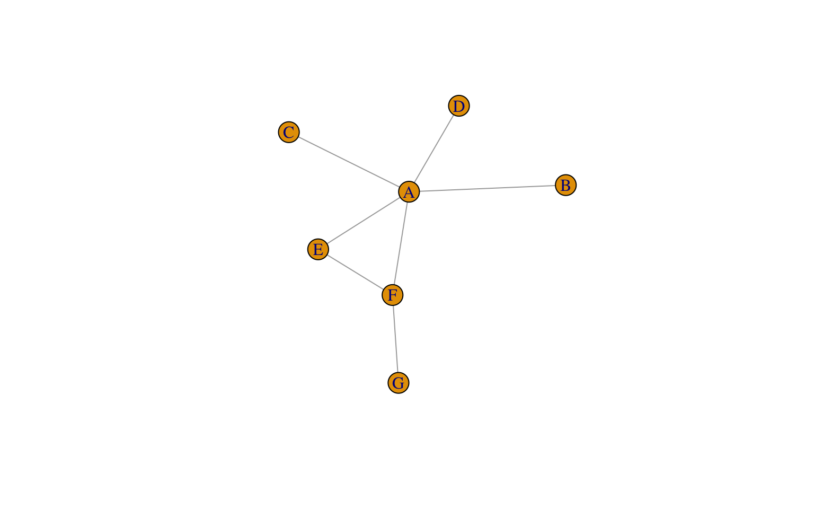
Network Attributes
ผู้วิเคราะห์สามารถใส่สารสนเทศอื่น ๆ ของจุดยอดและเส้นเชื่อมใน network graph เพื่อนำเสนอสารสนเทศที่เป็นคุณลักษณะของหน่วยข้อมูลหรือความสัมพันธ์กันระหว่างหน่วยข้อมูลได้ เรียกคุณลักษณะดังกล่าวว่า network attributes
attributes ของจุดยอด (vertex attributes) ใช้แสดงคุณลักษณะของหน่วยข้อมูล ซึ่งคุณลักษณะดังกล่าวสามารถกำหนดได้จากทั้งตัวแปรแบบจัดประเภท และตัวแปรเชิงปริมาณ
attributes ของเส้นเชื่อม (edge attributes) ใช้แสดงคุณลักษณะของความเชื่อมโยงหรือความสัมพันธ์ระหว่างหน่วยข้อมูล เช่น ประเภทของความสัมพันธ์ (มีทิศทาง ไม่มีทิศทาง) ระดับของความสัมพันธ์ หรือความบ่อยในการติดต่อพบเจอกันของหน่วยข้อมูล เป็นต้น
attribute ที่มักใช้แสดงคุณลักษณะของเส้นเชื่อมบ่อย ๆ คือ ความหนา/น้ำหนักของเส้นเชื่อม ซึ่งปรับน้ำหนักตามค่าของตัวแปรที่ใช้กำหนดคุณลักษณะของเส้นเชื่อมนั้น ๆ
การใส่ข้อมูลเกี่ยวกับ attribute ของจุดยอดและเส้นเชื่อมใน igraph สามารถทำได้โดยใช้คำสั่ง 2 ตัว ได้แก่
set_vertex_attr()
ยกตัวอย่างเช่น
g<-set_vertex_attr(g,
"age",
value=runif(7,18,30)
)
vertex_attr(g)## $name
## [1] "A" "B" "C" "D" "E" "F" "G"
##
## $age
## [1] 24.22599 26.35282 19.30773 24.61097 24.41289 20.75185 27.95434ในทำนองเดียวกัน การใส่สารสนเทศให้กับเส้นเชื่อสามารถทำได้โดยใช้ฟังก์ชัน
set_edge_attr()
g<-set_edge_attr(g,
"freq", # ความบ่อยในการติดต่อ
value=c(2,1,1,1,3,4,2)
)
edge_attr(g)## $freq
## [1] 2 1 1 1 3 4 2- จาก printout ของ igraph ข้่้างต้นจะเห็นว่า network graph ที่สร้างขึ้นนี้มี attributes ของ จุดยอด 1 ตัวได้แก่ name
g## IGRAPH 31360d0 UN-- 7 7 --
## + attr: name (v/c), age (v/n), freq (e/n)
## + edges from 31360d0 (vertex names):
## [1] A--B A--C A--D A--E A--F E--F F--Gอีกวิธีการหนึ่งในการสร้าง igraph object คือการใช้ฟังก์ชัน graph_from_data_frame() ซึ่งสะดวกในกรณีที่ผู้วิเคราะห์มีชุดข้อมูลแบบ data.frame ที่จะใช้สำหรับทำ network graph อยู่แล้ว โดยชุดข้อมูลดังกล่าวต้องประกอบด้วย ชุดข้อมูลของจุดยอด (vertices dataframe) และชุดข้อมูลของเส้นเชื่อม (edge dataframe) เช่น

vertices.df<-data.frame(name=LETTERS[1:7],
age=runif(7,18,30)
)
edge.df<-data.frame(from=col1,
to=col2,
frequency=c(2,1,1,1,3,4,2))
g<-graph_from_data_frame(vertices=vertices.df,
d=edge.df,
directed=FALSE)
g## IGRAPH 2c45222 UN-- 7 7 --
## + attr: name (v/c), age (v/n), frequency (e/n)
## + edges from 2c45222 (vertex names):
## [1] A--B A--C A--D A--E A--F E--F F--GSubsetting networks
ผู้วิเคราะห์สามารถแบ่งส่วนย่อยของ network graph โดยใช้ attribute ของ network เป็นตัวคัดกรองได้ เช่น
E(g)[[inc("E")]] # เรียกดูเฉพาะส่วนที่เกี่ยวข้องกับจุดยอด E## + 2/7 edges from 2c45222 (vertex names):
## tail head tid hid frequency
## 4 A E 1 5 1
## 6 E F 5 6 4E(g)[[frequency>3]] # เรียกดูเฉพาะส่วนที่ frequency > 3## + 1/7 edge from 2c45222 (vertex names):
## tail head tid hid frequency
## 6 E F 5 6 4V(g)[[age>25]] # เรียกดูเฉพาะส่วนที่เกี่ยวข้องกับหน่วยข้อมูลที่อายุมากกว่า 25 ปี## + 2/7 vertices, named, from 2c45222:
## name age
## 1 A 25.34716
## 7 G 27.23301plotting
V(g)$color.age<-ifelse(V(g)$age>25,"orange","skyblue")
g## IGRAPH 2c45222 UN-- 7 7 --
## + attr: name (v/c), age (v/n), color.age (v/c), frequency (e/n)
## + edges from 2c45222 (vertex names):
## [1] A--B A--C A--D A--E A--F E--F F--Gplot(g,
vertex.color=V(g)$color.age,
vertex.label.color="black",
vertex.size=45,
font.family="ChulaChrasNew"
)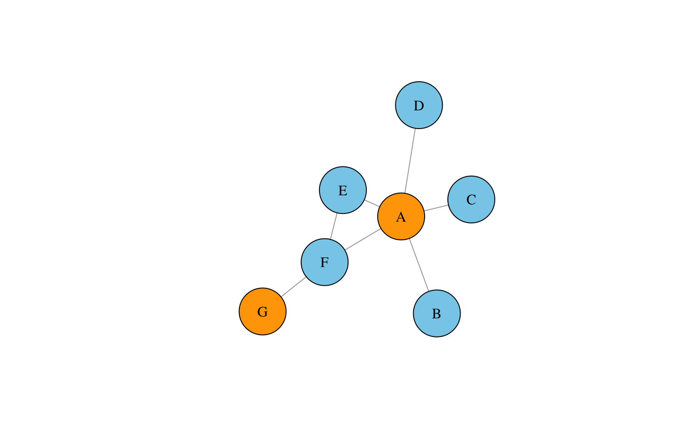
กิจกรรม
library(tm)
dat<-read_excel("/Users/siwachoat/Downloads/data_AJ suchada.xlsx")
dat<-data.frame(dat)plot(g)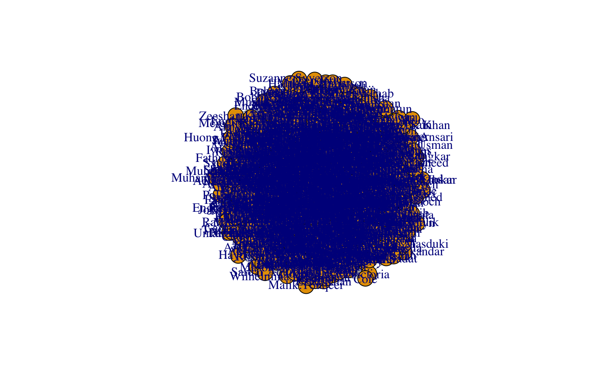
Network Visualization
การสร้างทัศนภาพของ network สามารถทำได้หลายลักษณะ ขึ้นอยู่กับการจัดวาง/ออกแบบ layout ของจุดยอดและเส้นเชื่อม การจัดวาง layout ที่เหมาะสมจะช่วยให้ผู้อ่านสามารถทำความเข้าใจสารสนเทศเชิงลึกใน network ได้อย่างรวดเร็วและแม่นยำ

size ของจุดยอด เหมาะสำหรับนำเสนอจุดยอดสำคัญ หรือ influencer ของ network นั้น ๆ
label ช่วยในการระบุตัวตนของจุดยอดที่สำคัญ อย่างไรก็ตามการใส่ label มากจนเกินไปทำให้การอ่าน network graph ทำได้ยากดังตัวอย่างในกิจกรรมข้างต้น
color และ shape ช่วยให้การจำแนกความแตกต่างระหว่างจุดยอดที่ต่างประเภทกัน
edge ได้แก่ การปรับเปลี่ยนน้ำหนัก สี และลักษณะของเส้นเชื่อม ซึ่งช่วยให้สามารถนำเสนอสารสนเทศในมิติต่าง ๆ เกี่ยวกับความสัมพันธ์ระหว่างหน่วยข้อมูลได้
note: การเลือกกำหนด visual element ต่าง ๆ ของ network ในข้างต้น ควรพิจารณาว่าการกำหนดดังกล่าวสามารถนำเสนอสารสนเทศสำคัญของ network ได้ดีมากน้อยเพียงใด
Network layout
layout หรือการจัดวางจุดยอดและเส้นเชื่อมใน network เป็นอีกหนึ่งปัจจัยที่มีผลต่อคุณภาพของ network ที่สร้างขึ้น ในชุดข้อมูลขนาดใหญ่เป็นไปได้ยากที่ผู้วิเคราะห์จะทำการจัดวางตำแหน่งของจุดยอดและเส้นเชื่อมด้วยตัวเอง จึงมีการพัฒนาอัลกอริทึมทางคณิตศาสตร์ที่ช่วยในการจัดวาง layout ของ network โดยอัตโนมัติ อัลกอริทึมที่แตกต่างกันจะจัดวาง layout ด้วยหลักคิดที่แตกต่างกัน และมีความเหมาะสมกับสถานการณ์/ชุดข้อมูลที่แตกต่างกันด้วย ผู้วิเคราะห์สามารถกำหนดวิธีการจัดวางได้จากอาร์กิวเมนท์ layout ทั้งนี้การพิจารณา layout ที่เหมาะสมอาจพิจารณาจาก เกณฑ์ต่อไปนี้
เส้นเชื่อมที่ซ้อนทับกันควรมีจำนวนน้อยที่สุด
จุดยอดของ network ต้องไม่ซ้อนทับกัน
ความยาวของเส้นเชื่อมแต่ละเส้นระหว่างจุดยอดควรมีความยาวเท่าเทียมกัน
รูปร่างของ network ควรมีลักษณะสมมาตรเท่าที่จะเป็นไปได้
key node/influencer ควรอยู่ตำแหน่งตรงกลางของ network
igraph มีอัลกอริทึมสำหรับจัดวาง layout ของ network หลายตัว เช่น

vertices.df<-data.frame(name=LETTERS[1:7],
age=runif(7,18,30)
)
edge.df<-data.frame(from=col1,
to=col2,
frequency=c(2,1,1,1,3,4,2))
g<-graph_from_data_frame(vertices=vertices.df,
d=edge.df,
directed=FALSE)
g## IGRAPH ea103b7 UN-- 7 7 --
## + attr: name (v/c), age (v/n), frequency (e/n)
## + edges from ea103b7 (vertex names):
## [1] A--B A--C A--D A--E A--F E--F F--Gplot(g, layout = layout_in_circle(g),
vertex.label=NA)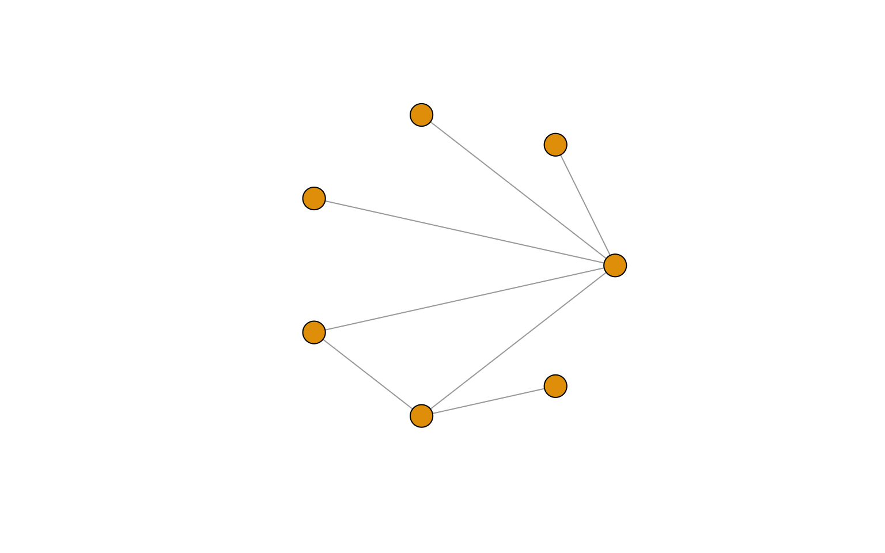
Visualizing edges
w<-E(g)$frequency #น้ำหนักของเส้นเชื่อม
m1<-layout_nicely(g)
plot(g, vertex.label.color="black",
edge.color="black",
edge.width=w,
layout=m1)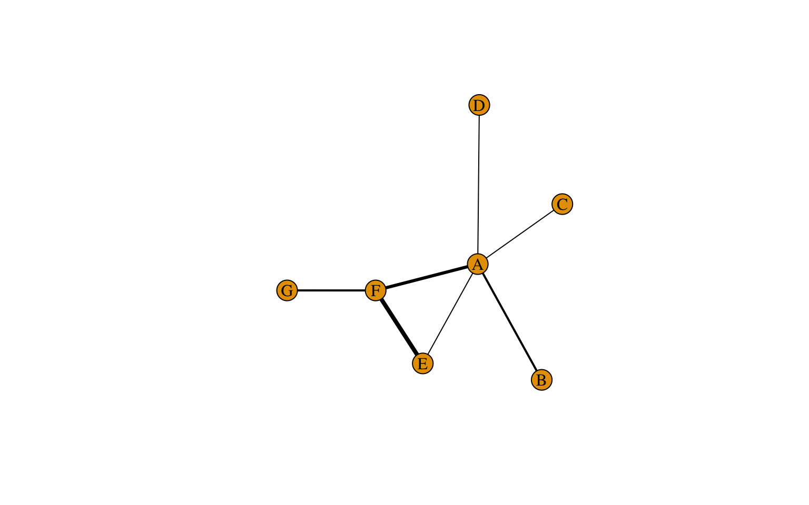
ในกรณีที่เส้นเชื่อมมีจำนวนมากเกินไป และมีบางเส้นที่ไม่จำเป็นต้อง plot ลงบน graph ผู้วิเคราะห์สามารถตัดเส้นเชื่อมดังกล่าวออกไปได้ โดยใช้ฟังก์ชัน delete_edges()
g2<-delete_edges(g, E(g)[[frequency<2]])
w2<-E(g2)$frequency
plot(g2, vertex.label.color="black",
edge.color="black",
edge.width=w2,
layout=m1)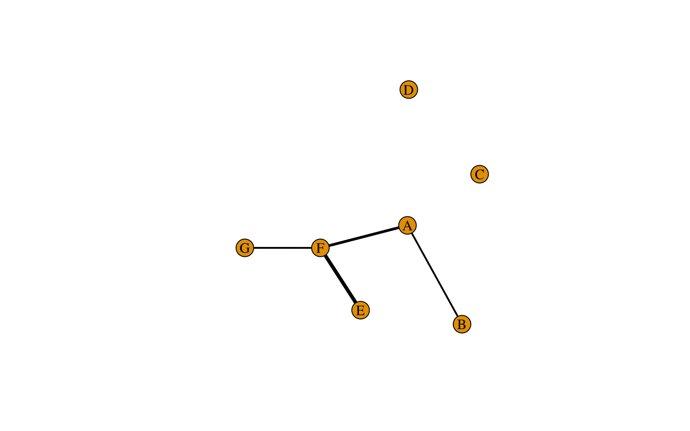
Directed networks
undirected network ในหัวข้อที่ผ่านมาใช้สำหรับบรรยายความสัมพันธ์แบบไม่มีทิศทางระหว่างหน่วยข้อมูล อย่างไรก็ตามในบางกรณีผู้วิเคราะห์อาจมีข้อมูลเกี่ยวกับทิศทางของความสัมพันธ์ระหว่างจุดยอด ซึ่งสามารถนำเสนอผ่าน directed network ที่ใช้ลูกศรเป็นบนเส้นเชื่อมเป็นสัญลักษณ์แทนทิศทางความสัมพันธ์

vertices.df<-data.frame(name=LETTERS[1:7],
age=runif(7,18,30)
)
edge.df<-data.frame(from=col1,
to=col2,
frequency=c(2,1,1,1,3,4,2))
g<-graph_from_data_frame(vertices=vertices.df,
d=edge.df,
directed=T)
g## IGRAPH f35b453 DN-- 7 7 --
## + attr: name (v/c), age (v/n), frequency (e/n)
## + edges from f35b453 (vertex names):
## [1] A->B A->C A->D A->E A->F E->F F->Gplot(g)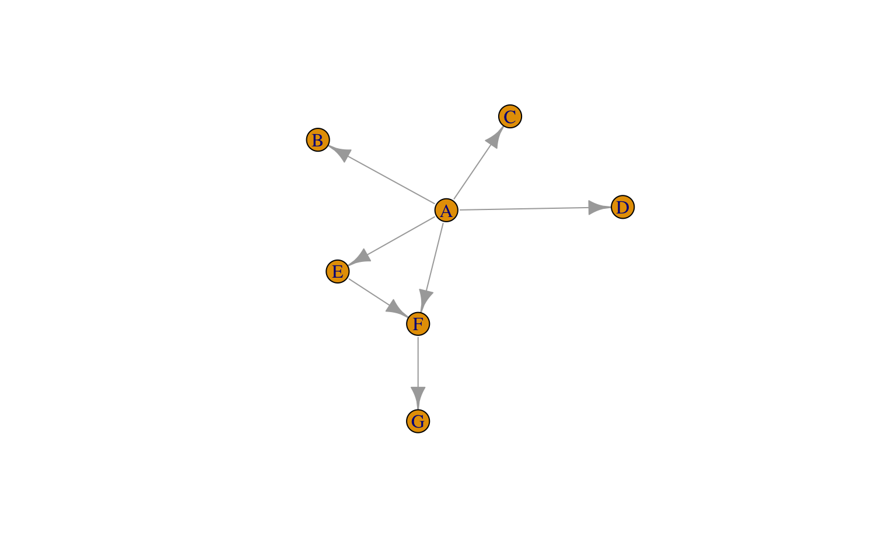
directed network สามารถใช้เป็นเครื่องมือในการระบุความสำคัญของหน่วยข้อมูลที่แทนด้วยจุดยอดแต่ละจุดได้ โดยอาจพิจารณาจากจำนวนลูกศรที่ออกจากจุดยอด (out-degree) หรือจำนวนลูกศรที่ชี้เข้าจุดยอด (in-degree) ขึ้นอยู่กับความหมายของความสัมพันธ์ใน network
g["A","B"] #มีเส้นเชื่อมระหว่าง A กับ B หรือไม่## [1] 1g["A","G"]## [1] 0incident(g, "A", mode=c("all")) #แสดงเส้นเชื่อมทั้งหมดของ A## + 5/7 edges from f35b453 (vertex names):
## [1] A->B A->C A->D A->E A->Fincident(g, "F", mode=c("all"))## + 3/7 edges from f35b453 (vertex names):
## [1] F->G A->F E->Fhead_of(g, E(g)) #จุดยอดที่เป็นจุดเริ่มต้นทั้งหมดใน network g## + 7/7 vertices, named, from f35b453:
## [1] B C D E F F Gกิจกรรม
dat2<-read.csv("COVID.csv")
covid<-data.frame(from=dat2$infector, to=dat2$case_ID)
g.covid<-graph_from_data_frame(covid, directed= TRUE)## Warning in graph_from_data_frame(covid, directed = TRUE): In `d' `NA' elements
## were replaced with string "NA"par(mar=c(1,1,1,1))
plot(g.covid,
vertex.label.color = "black",
edge.color = 'gray77',
vertex.size = 0,
edge.arrow.size = 0.5,
layout = layout_nicely(g.covid))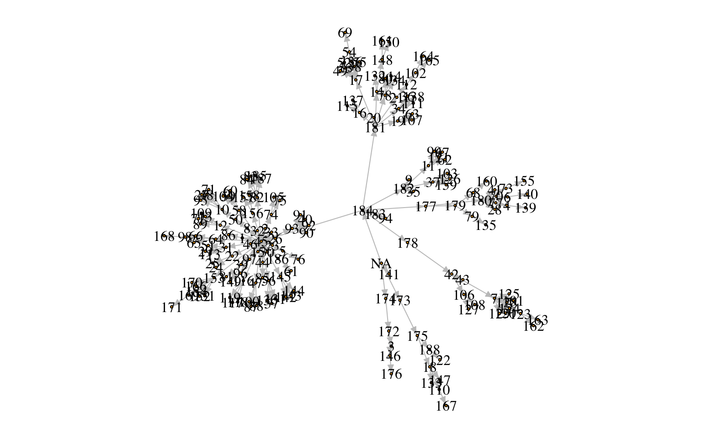
หน่วยข้อมูล 184 มี total-degree เท่ากับเท่าใด?
หน่วยข้อมูล 184 มี out-degree เท่ากับเท่าใด?
ความสัมพันธ์ระหว่างจุดยอด
การวิเคราะห์ความสัมพันธ์ระหว่างจุดยอดใน network สามารถทำได้หลายวิธีการ วิธีการหนึ่งคือการระบุ neighborhood ของจุดยอด โดยพิจารณาจากเส้นเชื่อมระหว่างจุดยอด
plot(g)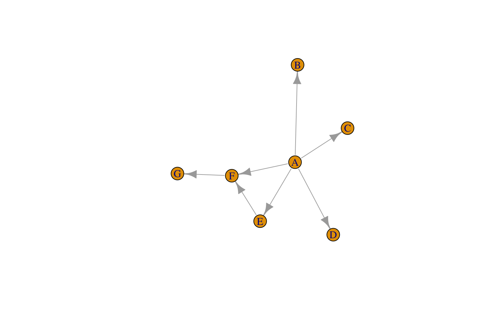
neighbors(g,"A", mode=c("all"))## + 5/7 vertices, named, from f35b453:
## [1] B C D E Fneighbors(g,"F", mode=c("all"))## + 3/7 vertices, named, from f35b453:
## [1] A E Gฟังก์ชัน intersection() สามารถใช้ตรวจสอบความสัมพันธ์ทางอ้อมระหว่างจุดยอดได้
x<-neighbors(g,"B", mode=c("all"))
y<-neighbors(g,"E", mode=c("all"))
intersection(x,y)## + 1/7 vertex, named, from f35b453:
## [1] Aวิธีการที่สองที่ใช้วิเคราะห์ความสัมพันธ์ระหว่างจุดยอดใน network คือการพิจารณาจากความยาวของเส้นทางที่เชื่อมระหว่างจุดยอด กล่าวคือ
ถ้าจุดยอดที่พิจารณาอยู่ภายใต้ neighborhood เดียวกัน path length จะมีค่าเท่ากับ 1
ถ้าจุดยอดที่พิจารณาอยู่คนละ neighborhood แล้ว path length จะมีค่ามากกว่า 1
ในการวิเคราะห์ network ตัวชี้วัดหนึ่งที่มักใช่้พิจารณาความสัมพันธ์ระหว่างจุดยอดคือ diameter ของ network ที่มีค่าเท่ากับ path length ที่มากที่สุดของ network นั้น การหา diameter ของ network สามารถทำได้โดยใช้ฟังก์ชัน farthest_vertices()
farthest_vertices(g)## $vertices
## + 2/7 vertices, named, from f35b453:
## [1] A G
##
## $distance
## [1] 2และการหาเส้นทางการเชื่อมโยงกันระหว่างจุดยอดที่อยู่ห่างกันมากที่สุด สามารถทำได้โดยใช้ฟังก์ชัน get_diameter()
get_diameter(g)## + 3/7 vertices, named, from f35b453:
## [1] A F Gego(g, 2, "A", mode="out")## [[1]]
## + 7/7 vertices, named, from f35b453:
## [1] A B C D E F Gกิจกรรม
จาก COVID network ที่สร้างไว้ข้างต้น
จงหา neighborhood ของหน่วยข้อมูลเบอร์ 12 (ทุก direction)
จงหาหน่วยข้อมูลที่ติดโรคจากหน่วยข้อมูลเบอร์ 12
จงหาหน่วยข้อมูลที่แพร่เชื้อมาให้หน่วยข้อมูลเบอร์ 12
network นี้มีการแพร่เชื้อติดต่อกันไกลที่สุดแค่ไหน
เส้นทางการติดต่อที่ไกลที่สุดเป็นอย่างไร
Important/Influential vertices
การระบุว่าจุดยอดใดเป็นจุดยอดที่มีความสำคัญหรือเป็นจุดยอดที่มีอิทธิพลสามารถพิจารณาได้จากหลายตัวบ่งชี้
degree
betweenness
eigenvector centrality
closeness centrality
pagerank centrality
degree
คือจำนวนเส้นเชื่อมที่เข้าหาหรือส่งออกจากจุดยอดแต่ละจุด การหา degree ของแต่ละจุดยอดสามารถทำได้โดยใช้ฟังก์ชัน degree()
degree(g, mode=c("out"))## A B C D E F G
## 5 0 0 0 1 1 0degree(g, mode=c("in"))## A B C D E F G
## 0 1 1 1 1 2 1degree(g, mode=c("all"))## A B C D E F G
## 5 1 1 1 2 3 1betweenness
จุดยอดที่มีค่า betweenness สูงคือจุดยอดที่เป็นจุดเชื่อมของหลาย ๆ ทางเชื่อมที่สั้นที่สุดระหว่งจุดยอดอื่น ๆ ใน network ยกตัวอย่างเช่น

จากรูปจะเห็นว่าการเชื่อมโยงที่สั้นที่สุดระหว่างจุดยอดหลาย ๆ คู่ จำเป็นจะต้องผ่าน A เป็นส่วนมาก ในกรณีนี้จุดยอด A จะมีค่า betweenness สูง การหายไปของจุดยอด A จะตัดการเชื่อมโยงระหว่างจุดยอดหลายกลุ่มใน network นี้ จุดยอด A ในทางกลับกันจุดยอด J, K, L, B,… ไม่ได้เป็นจุดยอดที่ทำหน้าที่เป็นตัวเชื่อมเหมือน A การขาดหายไปของจุดยอดดังกล่าวจะทำให้หน่วยข้อมูลลดลงเท่านั้น แต่ไม่ได้กระทบการเชื่อมโยงของ network อย่างมีนัยสำคัญ
ค่าสถิติ betweenness สามารถคำนวณได้จากฟังก์ชัน betweenness() ฟังก์ชันดังกล่าวมีอาร์กิวเมนท์สำคัญ 3 ตัวได้แก่ igraph object, directed = T or F และ normalized =T or F
eigenvector centrality
เป็นค่าสถิติที่ใช้วัดว่าจุดยอดแต่ละจุดนั้นมีการเชื่อมโยงกับจุดยอดที่มี degree สูงจุดอื่น ๆ มากน้อยแค่ไหน
eigen_centrality(g)$vector #calculate eigenvector centrality score## A B C D E F G
## 1.0000000 0.3854455 0.3854455 0.3854455 0.6782950 0.7597688 0.2928495กิจกรรม
จากชุดข้อมูล covid
คำนวณ out-degree ของแต่ละจุดยอด เพื่อวิเคราะห์รูปแบบการแพร่เชื้อและพิจารณาว่าหน่วยข้อมูลใดเป็น infector ที่สำคัญ
หน่วยข้อมูลที่แพร่เชื้อมากที่สุด เป็นหน่วยข้อมูลใด และแพร่เชื้อให้คนอื่นกี่คน
คำนวณค่า betweenness ของแต่ละจุดยอด
สำรวจการแจกแจงของ betweenness พบอะไรบ้าง
ลอง plot network อีกครั้งโดยกำหนดให้ vertex.size แปรผันตามคะแนน betweenness ผลลัพธ์ที่ได้เป็นอย่างไร?
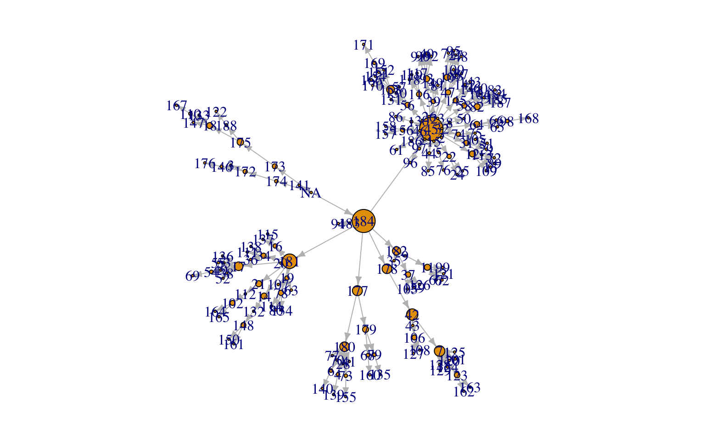
เราสามารถตัดส่วนย่อยของ network ขึ้นมาวิเคราะห์ได้ เช่น
g.covid184<-make_ego_graph(g.covid, diameter(g), nodes="184", mode=c("all"))[[1]]
plot(g.covid184,
#vertex.label = NA,
edge.color = 'grey',
edge.size=1,
vertex.size = sqrt(betweenness(g.covid, directed=T)),
edge.arrow.size = 0.5,
layout = layout_nicely(g.covid184))## Warning in layout[, 1] + label.dist * cos(-label.degree) * (vertex.size + :
## longer object length is not a multiple of shorter object length## Warning in layout[, 2] + label.dist * sin(-label.degree) * (vertex.size + :
## longer object length is not a multiple of shorter object length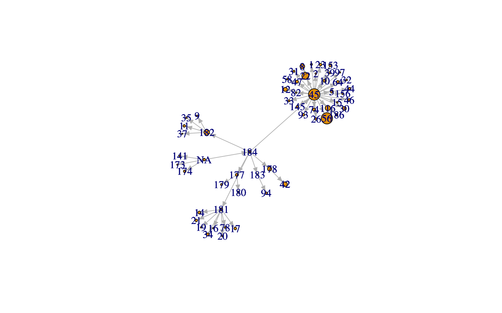
ฟังก์ชัน distance() สามารถใข้คำนวณ path length จากจุดยอดที่กำหนดไปยังจุดยอดอื่น ๆ ใน network ได้ ซึ่งมีประโยชน์มากในการสร้างสารสนเทศเพื่อแสดงอิทธิพลการแพร่เชื้อของหน่วยข้อมูล 184
dists<-distances(g.covid184, "184")
summary(dists)## 45 180 42 182 12 181
## Min. :1 Min. :2 Min. :2 Min. :1 Min. :2 Min. :1
## 1st Qu.:1 1st Qu.:2 1st Qu.:2 1st Qu.:1 1st Qu.:2 1st Qu.:1
## Median :1 Median :2 Median :2 Median :1 Median :2 Median :1
## Mean :1 Mean :2 Mean :2 Mean :1 Mean :2 Mean :1
## 3rd Qu.:1 3rd Qu.:2 3rd Qu.:2 3rd Qu.:1 3rd Qu.:2 3rd Qu.:1
## Max. :1 Max. :2 Max. :2 Max. :1 Max. :2 Max. :1
## 22 10 31 34 17 93
## Min. :2 Min. :2 Min. :2 Min. :2 Min. :2 Min. :2
## 1st Qu.:2 1st Qu.:2 1st Qu.:2 1st Qu.:2 1st Qu.:2 1st Qu.:2
## Median :2 Median :2 Median :2 Median :2 Median :2 Median :2
## Mean :2 Mean :2 Mean :2 Mean :2 Mean :2 Mean :2
## 3rd Qu.:2 3rd Qu.:2 3rd Qu.:2 3rd Qu.:2 3rd Qu.:2 3rd Qu.:2
## Max. :2 Max. :2 Max. :2 Max. :2 Max. :2 Max. :2
## 178 184 8 56 58 186
## Min. :1 Min. :0 Min. :2 Min. :2 Min. :2 Min. :2
## 1st Qu.:1 1st Qu.:0 1st Qu.:2 1st Qu.:2 1st Qu.:2 1st Qu.:2
## Median :1 Median :0 Median :2 Median :2 Median :2 Median :2
## Mean :1 Mean :0 Mean :2 Mean :2 Mean :2 Mean :2
## 3rd Qu.:1 3rd Qu.:0 3rd Qu.:2 3rd Qu.:2 3rd Qu.:2 3rd Qu.:2
## Max. :1 Max. :0 Max. :2 Max. :2 Max. :2 Max. :2
## 11 19 64 179 74 5
## Min. :2 Min. :2 Min. :2 Min. :2 Min. :2 Min. :2
## 1st Qu.:2 1st Qu.:2 1st Qu.:2 1st Qu.:2 1st Qu.:2 1st Qu.:2
## Median :2 Median :2 Median :2 Median :2 Median :2 Median :2
## Mean :2 Mean :2 Mean :2 Mean :2 Mean :2 Mean :2
## 3rd Qu.:2 3rd Qu.:2 3rd Qu.:2 3rd Qu.:2 3rd Qu.:2 3rd Qu.:2
## Max. :2 Max. :2 Max. :2 Max. :2 Max. :2 Max. :2
## 78 39 82 44 1 47
## Min. :2 Min. :2 Min. :2 Min. :2 Min. :2 Min. :2
## 1st Qu.:2 1st Qu.:2 1st Qu.:2 1st Qu.:2 1st Qu.:2 1st Qu.:2
## Median :2 Median :2 Median :2 Median :2 Median :2 Median :2
## Mean :2 Mean :2 Mean :2 Mean :2 Mean :2 Mean :2
## 3rd Qu.:2 3rd Qu.:2 3rd Qu.:2 3rd Qu.:2 3rd Qu.:2 3rd Qu.:2
## Max. :2 Max. :2 Max. :2 Max. :2 Max. :2 Max. :2
## 183 97 21 37 16 116
## Min. :1 Min. :2 Min. :2 Min. :2 Min. :2 Min. :2
## 1st Qu.:1 1st Qu.:2 1st Qu.:2 1st Qu.:2 1st Qu.:2 1st Qu.:2
## Median :1 Median :2 Median :2 Median :2 Median :2 Median :2
## Mean :1 Mean :2 Mean :2 Mean :2 Mean :2 Mean :2
## 3rd Qu.:1 3rd Qu.:2 3rd Qu.:2 3rd Qu.:2 3rd Qu.:2 3rd Qu.:2
## Max. :1 Max. :2 Max. :2 Max. :2 Max. :2 Max. :2
## 14 NA 145 153 156 174
## Min. :2 Min. :1 Min. :2 Min. :2 Min. :2 Min. :2
## 1st Qu.:2 1st Qu.:1 1st Qu.:2 1st Qu.:2 1st Qu.:2 1st Qu.:2
## Median :2 Median :1 Median :2 Median :2 Median :2 Median :2
## Mean :2 Mean :1 Mean :2 Mean :2 Mean :2 Mean :2
## 3rd Qu.:2 3rd Qu.:1 3rd Qu.:2 3rd Qu.:2 3rd Qu.:2 3rd Qu.:2
## Max. :2 Max. :1 Max. :2 Max. :2 Max. :2 Max. :2
## 173 177 2 9 15 20
## Min. :2 Min. :1 Min. :2 Min. :2 Min. :2 Min. :2
## 1st Qu.:2 1st Qu.:1 1st Qu.:2 1st Qu.:2 1st Qu.:2 1st Qu.:2
## Median :2 Median :1 Median :2 Median :2 Median :2 Median :2
## Mean :2 Mean :1 Mean :2 Mean :2 Mean :2 Mean :2
## 3rd Qu.:2 3rd Qu.:1 3rd Qu.:2 3rd Qu.:2 3rd Qu.:2 3rd Qu.:2
## Max. :2 Max. :1 Max. :2 Max. :2 Max. :2 Max. :2
## 23 26 30 32 33 35
## Min. :2 Min. :2 Min. :2 Min. :2 Min. :2 Min. :2
## 1st Qu.:2 1st Qu.:2 1st Qu.:2 1st Qu.:2 1st Qu.:2 1st Qu.:2
## Median :2 Median :2 Median :2 Median :2 Median :2 Median :2
## Mean :2 Mean :2 Mean :2 Mean :2 Mean :2 Mean :2
## 3rd Qu.:2 3rd Qu.:2 3rd Qu.:2 3rd Qu.:2 3rd Qu.:2 3rd Qu.:2
## Max. :2 Max. :2 Max. :2 Max. :2 Max. :2 Max. :2
## 46 94 141
## Min. :2 Min. :2 Min. :2
## 1st Qu.:2 1st Qu.:2 1st Qu.:2
## Median :2 Median :2 Median :2
## Mean :2 Mean :2 Mean :2
## 3rd Qu.:2 3rd Qu.:2 3rd Qu.:2
## Max. :2 Max. :2 Max. :2table(dists)## dists
## 0 1 2
## 1 7 49library(RColorBrewer)
pal<-brewer.pal("RdBu",n=11)[c(1,7,11)]V(g.covid184)$color<-pal[dists+1]
par(mar=c(1,1,1,1))
plot(g.covid184,
vertex.label = dists,
vertex.label.color="white",
vertex.color=V(g.covid184)$color,
edge.color = 'grey',
#vertex.size = sqrt(betweenness(g.covid, directed=T)),
edge.arrow.size = 0.05,
layout = layout_nicely(g.covid184))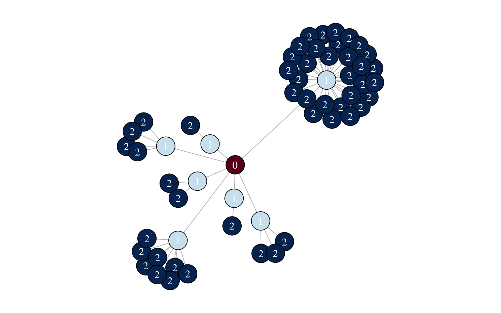
Overall network summary
Network Density
ใช้วิเคราะห์ความหนาแน่นของการเชื่อมโยงภายใน network มีค่าเท่ากับสัดส่วนของเส้นเชื่อมต่อจำนวนเส้นเชื่อมทั้งหมดที่เป็นไปได้
edge_density(g)## [1] 0.1666667Average path length
mean_distance(g, directed=TRUE)## [1] 1.222222mean_distance(g, directed=FALSE)## [1] 1.809524Interactive nework visualization
โปรแกรม R มี package หลายตัวที่สามารถใช้สร้าง interactive network visualization ได้
threejs
library(threejs)
graphjs(g.covid184,
vertex.size=1)x<-cluster_edge_betweenness(g.covid184)
i<-membership(x)
g.covid184<-set_vertex_attr(g.covid184,
"color",
value=pal[i]
)
graphjs(g.covid184,
vertex.size=1)networkD3
library(networkD3)
src <- c("A", "A", "A", "A",
"B", "B", "C", "C", "D")
target <- c("B", "C", "D", "J",
"E", "F", "G", "H", "I")
networkData <- data.frame(src, target)
# Plot
simpleNetwork(networkData)library(networkD3)
graph<-igraph_to_networkD3(g.covid184)
forceNetwork(Link=graph$links, Nodes=graph$nodes,
Source="source", Target="target",
NodeID="name", Group="name")library(networkD3)
x<-cluster_edge_betweenness(g.covid184)
group<-membership(x)
graph<-igraph_to_networkD3(g.covid184, group=group)
forceNetwork(Link=graph$links, Nodes=graph$nodes,
Source="source", Target="target",
NodeID="name",
Group="group",
opacity = 0.9,
fontFamily = "ChulaCharasNew", fontSize=16,
zoom=TRUE, legend=TRUE)
Social Networks?
Network graph คือทัศนภาพที่ใช้แสดงความเชื่อมโยง/ความสัมพันธ์ระหว่างหน่วยข้อมูล
รูปด้านล่างแสดงตัวอย่างของ network graph สัญลักษณ์วงกลมในรูปใช้แสดงหน่วยข้อมูล (ในที่นี้คือคน) และเส้นเชื่อมใช้แสดงความเชื่อมโยงหรือความสัมพันธ์ระหว่างคนกลุ่มดังกล่าว
สารสนเทศที่แสดงจาก network graph เป็นไปได้หลากหลายขึ้นอยู่กับข้อมูล เช่นอาจเป็นการแสดงความสัมพันธ์ระหว่างบุคคล การร่วมมือ/โครงข่ายในการดำเนินงาน การติดต่อสื่อสารซึ่งกันและกัน การเดินทาง การเชื่อมโยงกันระหว่างหน่วยข้อมูล เป็นต้น
จุดยอด (vertex หรือ node) ใช้แทนหน่วยข้อมูล
เส้นเชื่อม (edge) ใช้แทนความสัมพันธ์ระหว่างหน่วยข้อมูล
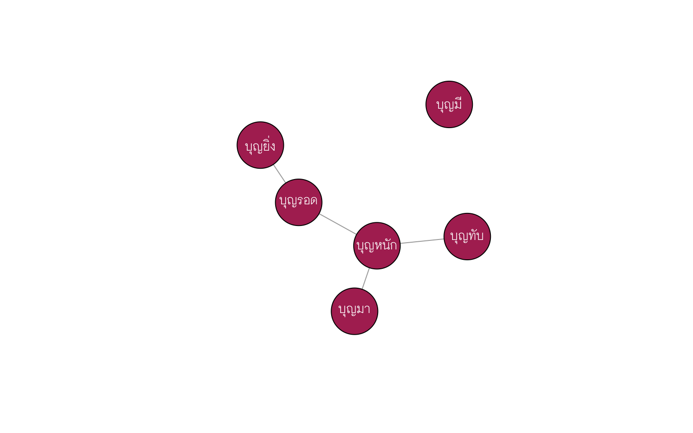